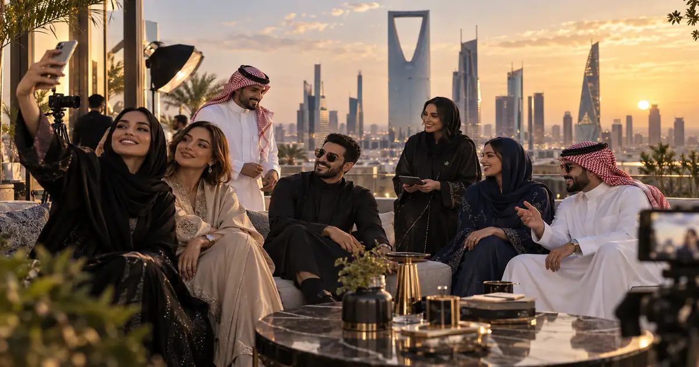

أصبحت الرياض خلال السنوات الأخيرة واحدة من أكثر مدن المنطقة نشاطًا في صناعة المحتوى والإعلانات الرقمية، بالتوازي مع توسع قطاع الترفيه والفعاليات والموضة والمطاعم والرياضة والتقنية. هذا التحول جعل البحث عن مشاهير الرياض ومؤثري الرياض جزءًا أساسيًا من قرارات العلامات التجارية التي تريد الوصول إلى الجمهور السعودي.
لكن بناء قائمة دقيقة ليس مجرد جمع أسماء سعودية مشهورة وإضافة كلمة «الرياض» إليها. لذلك يركز هذا الدليل على الأشخاص الذين تتوافر لديهم واحدة أو أكثر من الإشارات التالية: إقامة معلنة في الرياض، نشاط مهني واضح في العاصمة، محتوى متكرر عن المدينة، أو إدراج حديث في مصادر متخصصة تصنفهم ضمن مؤثري الرياض.
وتغطي القائمة مشاهير إنستغرام وتيك توك وسناب شات ويوتيوب، إلى جانب شخصيات عالمية أصبحت مرتبطة بالرياض بحكم الإقامة والعمل. وإذا كان هدفك تنفيذ حملة فعلية، يمكنك أيضًا مراجعة منصة المؤثرين في الرياض أو دليل كيفية اختيار المؤثر السعودي المناسب.
هذه قائمة تحريرية وليست تصنيفًا رسميًا أو ادعاءً بأن الرقم 1 «أفضل» مطلقًا من الرقم 2. تمت مراعاة الارتباط الفعلي بالرياض، وضوح التخصص، النشاط الحديث، الحضور على المنصات، والقيمة المحتملة للعلامات التجارية. تجنبنا تثبيت أرقام المتابعين داخل النص الأساسي لأنها تتغير يوميًا، ويمكن التحقق منها وقت الحملة من الحسابات الأصلية أو أدوات التحليل.
هل تبحث عن مؤثرين أو ترغب بالانضمام كصانع محتوى؟
اختر المسار المناسب لك، سواء كنت شركة تريد الوصول إلى مؤثرين لحملة في الرياض والسعودية، أو صانع محتوى يريد استقبال فرص تعاون إعلانية.
أسماء مشاهير الرياض: 30 شخصية مؤثرة بارزة في السوشال ميديا
يجمع الجدول التالي أسماء بارزة من مشاهير ومؤثري الرياض عبر مجالات متعددة، مع توضيح المنصة والجمهور والسبب الذي يربط كل اسم بالمشهد المحلي. الهدف ليس بناء ترتيب نهائي، بل تقديم قائمة قابلة للاستخدام في البحث والتخطيط التسويقي.

| # | المؤثر / المشهور | التخصص | المنصة الأساسية | الجمهور | سبب الارتباط بالرياض |
|---|---|---|---|---|---|
| 1 | Cristiano Ronaldo كريستيانو رونالدو | الرياضة والحضور الرقمي العالمي | عالمي | إقامة ونشاط رياضي في الرياض مع نادي النصر | |
| 2 | Georgina Rodríguez جورجينا رودريغيز | الموضة واللايف ستايل | عالمي / الخليج | مقيمة في الرياض منذ 2023 بحسب Arab News | |
| 3 | Yara AlNamlah يارا النملة | الجمال وريادة الأعمال | السعودية / الخليج | مشاريع تجميل وضيافة مقرها الرياض وحضور مؤثر في قطاع الجمال | |
| 4 | Amy Roko إيمي روكو | الكوميديا واللايف ستايل | Instagram / TikTok | السعودية / الخليج | مدرجة ضمن مؤثري الرياض مع حضور ترفيهي معروف |
| 5 | Waad Altarki وعد التركي | المكياج والجمال | السعودية / الخليج | خبيرة مكياج مقرها الرياض بحسب Arab News | |
| 6 | Ajwa Aljoudi أجوى الجودي | الإعلام والسينما والموضة | السعودية / الخليج | مقدمة ومراسلة تلفزيونية مقرها الرياض بحسب Vogue Arabia | |
| 7 | Zainab Alblushi زينب البلوشي | اللايف ستايل والسفر والموضة | Instagram / TikTok | السعودية / الخليج | مدرجة ضمن صانعات المحتوى المقيمات في الرياض |
| 8 | Hala Abdullah هلا عبدالله | الموضة والمجوهرات | Instagram / TikTok | السعودية / الخليج | مصممة ومؤثرة مرتبطة بمشهد الرياض والموضة السعودية |
| 9 | Jnjooh الجوهرة (Jnjooh) | اللايف ستايل والفلوقات | TikTok / YouTube / Instagram | السعودية | صانعة محتوى سعودية مقرها الرياض ومحتواها مرتبط بالحياة اليومية في المدينة |
| 10 | Mashael Alyaqout مشاعل الياقوت | الموضة والتصميم والكتابة | السعودية | مصممة وصانعة محتوى تذكر الرياض والأحساء ضمن نطاق عملها | |
| 11 | Rakan Alhamdan راكان الحمدان | الموضة واللايف ستايل والموديلينغ | السعودية / الخليج | مؤثر موضة يذكر الرياض ودبي ضمن نطاق حضوره | |
| 12 | Ruba Tursun ربى تورسون | الموديلينغ واليوتيوب والفروسية | Instagram / YouTube | السعودية / دولي | عارضة سعودية وصانعة محتوى مرتبطة بالرياض وميامي |
| 13 | Nouf Alnamlah نوف النملة | تنسيق الأزياء والاستشارات | السعودية | ستايلست ومستشارة موضة مقرها الرياض | |
| 14 | Sausan Alkadi سوسن القاضي | الموضة والسفر | Instagram / TikTok | السعودية / الخليج | مدرجة ضمن مؤثرات الرياض في محتوى الموضة والسفر |
| 15 | Daria Sots داريا سوتس | حياة المقيمين والثقافة المحلية | Instagram / TikTok | المقيمون والزوار | محتوى يشرح الحياة والعادات والتجارب في الرياض |
| 16 | Waneesa Zai Binte Manzoor وانيسا زاي | الطعام والجمال واللايف ستايل | الرياض | توصيات محلية مرتبطة بالرياض | |
| 17 | Aya Diab آية دياب | الموضة والجمال والسفر | Instagram / TikTok | السعودية / الخليج | محتوى تسوق وموضة وجمال موجه للسوق السعودي |
| 18 | Dani O Connor داني أوكونور | الموضة والسفر والجمال واللايف ستايل | الرياض / الخليج | صانعة محتوى وإعلام مرخصة تذكر الرياض وGCC في ملفها | |
| 19 | Karina Awartani كارينا أوارتاني | الموضة واللايف ستايل والمطاعم | الرياض | تغطية تجارب ووجهات ومطاعم في الرياض | |
| 20 | Cecilia in Arabia سيسيليا إن أرابيا | السياحة والثقافة | السعودية / دولي | صناعة محتوى عن اكتشاف السعودية والرياض من منظور سياحي | |
| 21 | Ribah Khan رباح خان | الطعام والوجهات واللايف ستايل | الرياض | دليل محلي للمطاعم والتجارب الفاخرة والمحلية في الرياض | |
| 22 | Adventures in Abaya أدفنتشرز إن عباية | الطعام والفعاليات | الرياض | مراجعات مطاعم وفعاليات وتجارب محلية في الرياض | |
| 23 | Sundus Tahir سندس طاهر | المطاعم والموضة المحتشمة | الرياض | تغطية مطاعم ومقاهٍ وموضة محتشمة في الرياض | |
| 24 | Maha Ebrahim مها إبراهيم | السياحة والترفيه واللايف ستايل | الرياض | محتوى متخصص بوجهات الرياض والمقاهي والموضة | |
| 25 | Soha Sallem سها سالم | المكياج والستايل والعناية | الرياض | مؤثرة جمال ولايف ستايل مصنفة في الرياض | |
| 26 | Rawan Mohammed روان محمد | المكياج واللايف ستايل | الرياض / دبي | محتوى مكياج ولايف ستايل مع حضور في الرياض ودبي | |
| 27 | Nour Haddad نور حداد | الغناء واللايف ستايل | Instagram / Snapchat | الرياض / دبي | مغنية وصانعة محتوى تذكر الرياض ودبي ضمن نطاقها |
| 28 | Rasha Dalal رشا دلال | الجمال والموضة واللايف ستايل | الرياض / الخليج | محتوى جمال وموضة مع تصنيف مكاني في الرياض | |
| 29 | Rabea Khan رابعة خان | الموضة والجمال واللايف ستايل | الرياض | مؤثرة مرخصة تذكر الرياض بوضوح في ملفها | |
| 30 | Paulina Sadoch بولينا سادوش | العناية بالبشرة والحياة في السعودية | الرياض / المقيمون | محتوى عن الحياة في السعودية والعناية بالبشرة |
من هم أشهر مشاهير السوشال ميديا في الرياض؟
مشهد التأثير في الرياض أوسع من فئة واحدة. هناك أسماء عالمية انتقلت إلى العاصمة وأصبحت جزءًا من صورتها الإعلامية، وأسماء سعودية بنت حضورها من الجمال والموضة والكوميديا والفلوقات، إلى جانب مؤثرين محليين متخصصين بالمطاعم والفعاليات والتجارب اليومية.
ولهذا فإن عبارة «مشاهير الرياض» لا تعني فقط أعلى عدد من المتابعين. بالنسبة للشركات، قد يكون صانع محتوى محلي متخصص بالمطاعم أو الموضة أكثر فاعلية من نجم عالمي إذا كان الهدف هو زيارات متجر، حجز مطعم، إطلاق منتج محلي أو حضور فعالية داخل المدينة.
إذا كنت تريد مقارنة هذه الأسماء مع نطاق المملكة كاملًا، راجع أيضًا دليل أفضل مؤثرين السعودية.
أشهر 12 اسمًا مرتبطًا بالرياض بالتفصيل
فيما يلي شرح تفصيلي لأسماء تجمع بين شهرة واسعة أو حضور مهني واضح في العاصمة، مع التركيز على سبب الأهمية ونوع الحملات التي قد تناسب كل شخصية.
1. Cristiano Ronaldo (كريستيانو رونالدو)
يأتي كريستيانو رونالدو في مقدمة الأسماء العالمية المرتبطة بالرياض من حيث الحضور الرقمي، فهو قائد نادي النصر في موسم 2026-2027 ويملك واحدة من أكبر القواعد الجماهيرية على منصات التواصل في العالم. وجوده الرياضي في العاصمة جعل اسمه جزءًا مباشرًا من المشهد الإعلامي والرياضي والترفيهي في الرياض.
من زاوية التسويق، يختلف رونالدو عن صانع المحتوى التقليدي؛ فالتعاون معه يكون عادة على مستوى شراكات عالمية ورعاية كبرى، وليس حملات محلية صغيرة. لذلك يفيد إدراجه هنا لفهم حجم التأثير العالمي الذي أصبح مرتبطًا بالرياض، وليس باعتباره خيارًا اعتياديًا لكل ميزانية.
- المجال: الرياضة والحضور الرقمي العالمي.
- المنصة الأساسية: Instagram.
- الجمهور: عالمي.
- علاقته بالرياض: قائد نادي النصر ونشاطه الرياضي في العاصمة.
- مناسب لحملات: الرعايات العالمية، الرياضة، المنتجات الاستهلاكية الكبرى، السياحة والفعاليات على مستوى دولي.
2. Georgina Rodríguez (جورجينا رودريغيز)
تُعد جورجينا رودريغيز من أشهر الشخصيات المقيمة في الرياض، وتجمع بين الموضة واللايف ستايل والظهور الإعلامي العالمي. وأكدت Arab News في أغسطس 2026 أنها تتخذ الرياض مقرًا لها منذ أوائل 2023، وهو ما يجعل ارتباطها بالمدينة ثابتًا وليس مجرد زيارات موسمية.
يعتمد محتواها على الأزياء الفاخرة، المجوهرات، السفر، الحياة العائلية والمناسبات الدولية، إضافة إلى حضورها عبر مسلسل I Am Georgina. هذا المزيج يجعلها اسمًا شديد القيمة للعلامات الفاخرة والحملات التي تبحث عن وصول عالمي مرتبط بصورة الرياض الحديثة.
- المجال: الموضة واللايف ستايل.
- المنصة الأساسية: Instagram.
- الجمهور: عالمي مع اهتمام قوي بالخليج.
- علاقتها بالرياض: مقيمة في العاصمة منذ 2023.
- مناسبة لحملات: الفخامة، الأزياء، المجوهرات، الضيافة والسفر.
3. Yara AlNamlah (يارا النملة)
تُعد يارا النملة من أبرز الأصوات السعودية في الجمال وريادة الأعمال، وارتبط اسمها بالرياض عبر مشاريع فعلية داخل المدينة، وليس فقط عبر المحتوى الرقمي. بدأت من مشاركة اهتمامها بالمكياج والجمال ثم توسعت إلى تأسيس مشاريع في الضيافة والعناية والجمال.
تشمل مشاريعها So Matcha وTreat Salon وTreat Luxury Spa في الرياض، إضافة إلى علامة Moonglaze التي واصلت توسعها في 2026. هذه الخلفية تجعلها مؤثرة تجمع بين سلطة المحتوى والخبرة التجارية، وهي نقطة مهمة للعلامات التي تبحث عن شريك له مصداقية في الجمال والرفاهية.
- المجال: الجمال، العناية، وريادة الأعمال.
- المنصة الأساسية: Instagram.
- الجمهور: السعودية والخليج والشرق الأوسط.
- أبرز المشاريع: Treat، So Matcha، Moonglaze.
- مناسبة لحملات: التجميل، العناية بالبشرة، الضيافة، الموضة والمنتجات الفاخرة.
4. Amy Roko (إيمي روكو)
تُعد إيمي روكو من أشهر صانعات المحتوى السعوديات في الكوميديا واللايف ستايل، وتظهر ضمن القوائم التحريرية التي تصنف صانعات المحتوى المقيمات أو النشطات في الرياض. نجحت في بناء شخصية رقمية معروفة بفضل الأسلوب الساخر والحضور العفوي.
قوة إيمي الأساسية هي قابلية المحتوى للمشاركة ووضوح الشخصية، ما يجعلها مناسبة للحملات الشبابية والمنتجات التي تحتاج إلى تقديم خفيف وقريب من الجمهور. كما تمتد صورتها العامة إلى الموضة والإبداع، فلا تقتصر على الكوميديا وحدها.
- المجال: الكوميديا واللايف ستايل.
- المنصة الأساسية: Instagram وTikTok.
- الجمهور: السعودية والخليج والعالم العربي.
- أبرز ما يميزها: شخصية كوميدية واضحة وقابلية عالية للمحتوى القصير.
- مناسبة لحملات: التطبيقات، الترفيه، الموضة، المطاعم والمنتجات الشبابية.
5. Waad Altarki (وعد التركي)
وعد التركي خبيرة مكياج سعودية مقرها الرياض، ووصفتها Arab News ضمن أبرز فناني المكياج العرب الذين يستحقون المتابعة. يرتكز حضورها على المكياج الاحترافي، إطلالات المناسبات والعرائس، الماستركلاس، والتعاون مع علامات تجميل عالمية.
الميزة التسويقية لوعد أنها لا تقدم الجمال من زاوية استعراضية فقط؛ لديها هوية مهنية واضحة كخبيرة مكياج، ما يجعل تعاونها أكثر ملاءمة لمنتجات التجميل التي تحتاج إلى شرح، تطبيق عملي، أو بناء ثقة حول جودة المنتج.
- المجال: المكياج والجمال.
- المنصة الأساسية: Instagram.
- الجمهور: السعودية والخليج.
- علاقتها بالرياض: خبيرة مكياج مقرها الرياض.
- مناسبة لحملات: مستحضرات التجميل، العناية، الصالونات، المناسبات والموضة.
6. Ajwa Aljoudi (أجوى الجودي)
أجوى الجودي مقدمة ومراسلة تلفزيونية سعودية مقرها الرياض، وقد وصفتها Vogue Arabia بأنها «Saudi’s Red Carpet Gal» نظرًا لحضورها في الفعاليات والمهرجانات والسجادة الحمراء. تجمع بين الصحافة، تقديم البرامج، السينما والموضة.
هذا المزيج يمنحها قيمة مختلفة عن المؤثر التقليدي، لأنها تمتلك خلفية إعلامية احترافية وقدرة على إجراء المقابلات وتغطية الفعاليات. لذلك تناسب الحملات المرتبطة بالثقافة والسينما والفعاليات والوجهات الراقية أكثر من حملات البيع المباشر وحدها.
- المجال: الإعلام، السينما، الفعاليات والموضة.
- المنصة الأساسية: Instagram.
- الجمهور: السعودية والخليج والمهتمون بالسينما والثقافة.
- علاقتها بالرياض: مقدمة تلفزيونية مقرها الرياض.
- مناسبة لحملات: الفعاليات، الثقافة، السينما، الموضة والضيافة.
7. Zainab Alblushi (زينب البلوشي)
تظهر زينب البلوشي ضمن قوائم مؤثري الرياض بفضل محتوى يجمع بين اللايف ستايل والسفر والموضة. هويتها البصرية تركز على الإطلالات والتجارب اليومية والوجهات، ما يجعلها قريبة من نية البحث عن «مشاهير إنستقرام الرياض» و«مؤثرات الرياض».
بالنسبة للعلامات التجارية، يناسب أسلوب زينب الحملات التي تحتاج إلى تصوير بصري قوي وربط المنتج بأسلوب حياة حضري، خصوصًا في الأزياء والجمال والسفر والمطاعم والوجهات الجديدة في العاصمة.
- المجال: اللايف ستايل والسفر والموضة.
- المنصة الأساسية: Instagram وTikTok.
- الجمهور: السعودية والخليج.
- أبرز المحتوى: الإطلالات، السفر والتجارب اليومية.
- مناسبة لحملات: الموضة، الجمال، السياحة، المطاعم والفعاليات.
8. Hala Abdullah (هلا عبدالله)
هلا عبدالله مؤثرة ومصممة مجوهرات سعودية تجمع بين الموضة والتصميم وبناء العلامة الشخصية. ظهرت ضمن قوائم المؤثرات المرتبطات بالرياض، كما أسست علامة المجوهرات OFA المستلهمة من الثقافة والهوية السعودية.
من المهم التعامل مع موقعها الجغرافي بدقة: مصادر أخرى تشير إلى أنها تقسم وقتها بين السعودية والإمارات، لذلك الأفضل وصفها بأنها من الأسماء المرتبطة بمشهد الرياض والموضة السعودية بدل الادعاء بأنها مقيمة حصريًا في الرياض طوال العام.
- المجال: الموضة والمجوهرات والتصميم.
- المنصة الأساسية: Instagram وTikTok.
- الجمهور: السعودية والخليج.
- أبرز مشروع: OFA.
- مناسبة لحملات: المجوهرات، الأزياء، التصميم والمنتجات الفاخرة.
9. Jnjooh (الجوهرة)
Jnjooh أو «الجوهرة» صانعة محتوى سعودية مقرها الرياض، وتقدم محتوى يوميات وفلوقات يرتبط بالحياة المحلية في المدينة. تتوزع على TikTok وYouTube وInstagram وتوثق تجارب المطاعم، التغييرات اليومية، المناسبات واللحظات الشخصية بأسلوب قريب من الجمهور.
الميزة التسويقية لهذا النوع من الحسابات هي أن المنتج يمكن أن يظهر داخل سياق يومي طبيعي بدل إعلان منفصل، ما يناسب المطاعم، التجارة الإلكترونية، المنتجات المنزلية، الجمال والتطبيقات والخدمات المحلية في الرياض.
- المجال: اللايف ستايل والفلوقات.
- المنصات: TikTok وYouTube وInstagram.
- الجمهور: سعودي بالدرجة الأولى.
- علاقتها بالرياض: محتوى يومي مرتبط بالمدينة.
- مناسبة لحملات: المطاعم، التطبيقات، التجارة الإلكترونية والجمال.
10. Mashael Alyaqout (مشاعل الياقوت)
مشاعل الياقوت مصممة أزياء وصانعة محتوى وكاتبة، ويظهر في ملفها ارتباط مباشر بالرياض والأحساء. تجمع بين المعرفة بالموضة وصناعة المحتوى، وهو ما يمنحها مساحة مناسبة للحملات التي تستهدف الأزياء المحلية والهوية السعودية.
وجود خلفية تصميمية يضيف قيمة للحملات التي تحتاج إلى سرد بصري أو تفسير للقطع والستايل، بدل الاكتفاء بصورة منتج. كما يمكن أن تناسب الفعاليات والأسابيع المرتبطة بالموضة والتصميم في الرياض.
- المجال: الأزياء والتصميم والكتابة.
- المنصة الأساسية: Instagram.
- الجمهور: السعودية والمهتمون بالموضة.
- علاقتها بالرياض: الرياض ضمن نطاقها الجغرافي المعلن.
- مناسبة لحملات: الأزياء، المصممين المحليين، الفعاليات والتجزئة.
11. Rakan Alhamdan (راكان الحمدان)
راكان الحمدان مؤثر في الموضة واللايف ستايل والموديلينغ، ويذكر الرياض ودبي ضمن نطاق حضوره. يقدم محتوى يعتمد بصورة كبيرة على الإطلالات والهوية البصرية، ما يجعله من الأسماء المناسبة للعلامات التي تستهدف الموضة الرجالية والجمهور الخليجي.
يمكن الاستفادة من راكان خصوصًا في الحملات المرئية، إطلاق المجموعات، التجزئة، العطور، الساعات والوجهات، مع ضرورة تقييم بيانات الجمهور الفعلية قبل أي حجز إعلاني كما هو الحال مع أي مؤثر.
- المجال: الموضة، اللايف ستايل والموديلينغ.
- المنصة الأساسية: Instagram.
- الجمهور: السعودية والخليج.
- النطاق الجغرافي: الرياض ودبي.
- مناسب لحملات: الموضة الرجالية، العطور، الساعات والتجزئة.
12. Ruba Tursun (ربى تورسون)
ربى تورسون عارضة سعودية وصانعة محتوى ويوتيوبر وتهتم بالفروسية، وتذكر الرياض وميامي ضمن نطاقها. هذا التنوع يجعل محتواها قادرًا على الجمع بين الموضة والرياضة وأسلوب الحياة والسفر.
ربط الموضة بالفروسية والحركة يعطيها مساحة مختلفة عن مؤثرات الموضة التقليديات، وقد يكون ملائمًا لعلامات الأزياء الرياضية، الفعاليات، السيارات، السفر والمنتجات الراقية التي تستهدف جمهورًا سعوديًا ودوليًا.
- المجال: الموديلينغ واليوتيوب والفروسية.
- المنصة الأساسية: Instagram وYouTube.
- الجمهور: السعودية ودولي.
- النطاق الجغرافي: الرياض وميامي.
- مناسبة لحملات: الموضة، الفروسية، السفر، السيارات والفعاليات.
مقارنة بين مشاهير الرياض حسب مجال التعاون الإعلاني
اختيار المؤثر يجب أن يبدأ من هدف الحملة. يوضح الجدول التالي أمثلة عملية لأفضل الاستخدامات، مع التنبيه إلى أن الملاءمة النهائية تتطلب مراجعة بيانات الجمهور والتفاعل الحديثة قبل التعاقد.
| الاسم | المجال | المنصة | أفضل استخدام تسويقي |
|---|---|---|---|
| Yara AlNamlah | الجمال وريادة الأعمال | التجميل، العناية، الضيافة والمنتجات الفاخرة | |
| Amy Roko | الكوميديا واللايف ستايل | Instagram / TikTok | المنتجات الشبابية، التطبيقات، الترفيه والمطاعم |
| Waad Altarki | المكياج | مستحضرات التجميل، الشروحات والماستركلاس | |
| Ajwa Aljoudi | الإعلام والسينما | الفعاليات، الثقافة، الضيافة والموضة | |
| Jnjooh | الفلوقات واللايف ستايل | TikTok / YouTube | المطاعم، التجارة الإلكترونية والتطبيقات |
| Rakan Alhamdan | الموضة الرجالية | الأزياء، العطور، الساعات والتجزئة | |
| Ribah Khan | الطعام والوجهات | افتتاحات المطاعم، المقاهي والتجارب المحلية | |
| Daria Sots | حياة المقيمين | Instagram / TikTok | السياحة، الخدمات، التجارب الموجهة للمقيمين والزوار |
| Georgina Rodríguez | الموضة والفخامة | العلامات العالمية والفاخرة والحملات ذات الانتشار الدولي | |
| Cristiano Ronaldo | الرياضة | شراكات ورعايات عالمية كبرى |
القائمة الكاملة لأبرز 50 مشهورًا ومؤثرًا على السوشال ميديا في الرياض

| # | الاسم | المجال | المنصة الأساسية | الجمهور |
|---|---|---|---|---|
| 1 | Cristiano Ronaldo كريستيانو رونالدو | الرياضة والحضور الرقمي العالمي | عالمي | |
| 2 | Georgina Rodríguez جورجينا رودريغيز | الموضة واللايف ستايل | عالمي / الخليج | |
| 3 | Yara AlNamlah يارا النملة | الجمال وريادة الأعمال | السعودية / الخليج | |
| 4 | Amy Roko إيمي روكو | الكوميديا واللايف ستايل | Instagram / TikTok | السعودية / الخليج |
| 5 | Waad Altarki وعد التركي | المكياج والجمال | السعودية / الخليج | |
| 6 | Ajwa Aljoudi أجوى الجودي | الإعلام والسينما والموضة | السعودية / الخليج | |
| 7 | Zainab Alblushi زينب البلوشي | اللايف ستايل والسفر والموضة | Instagram / TikTok | السعودية / الخليج |
| 8 | Hala Abdullah هلا عبدالله | الموضة والمجوهرات | Instagram / TikTok | السعودية / الخليج |
| 9 | Jnjooh الجوهرة (Jnjooh) | اللايف ستايل والفلوقات | TikTok / YouTube / Instagram | السعودية |
| 10 | Mashael Alyaqout مشاعل الياقوت | الموضة والتصميم والكتابة | السعودية | |
| 11 | Rakan Alhamdan راكان الحمدان | الموضة واللايف ستايل والموديلينغ | السعودية / الخليج | |
| 12 | Ruba Tursun ربى تورسون | الموديلينغ واليوتيوب والفروسية | Instagram / YouTube | السعودية / دولي |
| 13 | Nouf Alnamlah نوف النملة | تنسيق الأزياء والاستشارات | السعودية | |
| 14 | Sausan Alkadi سوسن القاضي | الموضة والسفر | Instagram / TikTok | السعودية / الخليج |
| 15 | Daria Sots داريا سوتس | حياة المقيمين والثقافة المحلية | Instagram / TikTok | المقيمون والزوار |
| 16 | Waneesa Zai Binte Manzoor وانيسا زاي | الطعام والجمال واللايف ستايل | الرياض | |
| 17 | Aya Diab آية دياب | الموضة والجمال والسفر | Instagram / TikTok | السعودية / الخليج |
| 18 | Dani O Connor داني أوكونور | الموضة والسفر والجمال واللايف ستايل | الرياض / الخليج | |
| 19 | Karina Awartani كارينا أوارتاني | الموضة واللايف ستايل والمطاعم | الرياض | |
| 20 | Cecilia in Arabia سيسيليا إن أرابيا | السياحة والثقافة | السعودية / دولي | |
| 21 | Ribah Khan رباح خان | الطعام والوجهات واللايف ستايل | الرياض | |
| 22 | Adventures in Abaya أدفنتشرز إن عباية | الطعام والفعاليات | الرياض | |
| 23 | Sundus Tahir سندس طاهر | المطاعم والموضة المحتشمة | الرياض | |
| 24 | Maha Ebrahim مها إبراهيم | السياحة والترفيه واللايف ستايل | الرياض | |
| 25 | Soha Sallem سها سالم | المكياج والستايل والعناية | الرياض | |
| 26 | Rawan Mohammed روان محمد | المكياج واللايف ستايل | الرياض / دبي | |
| 27 | Nour Haddad نور حداد | الغناء واللايف ستايل | Instagram / Snapchat | الرياض / دبي |
| 28 | Rasha Dalal رشا دلال | الجمال والموضة واللايف ستايل | الرياض / الخليج | |
| 29 | Rabea Khan رابعة خان | الموضة والجمال واللايف ستايل | الرياض | |
| 30 | Paulina Sadoch بولينا سادوش | العناية بالبشرة والحياة في السعودية | الرياض / المقيمون | |
| 31 | Maram Alnahla مرام النحلة | الموضة والفخامة والمكياج | الرياض | |
| 32 | Samira Anwar سميرة أنور | العناية بالبشرة والمكياج واللايف ستايل | الرياض | |
| 33 | Ania Dar أنيا دار | الجمال واللايف ستايل والطعام | الرياض | |
| 34 | Fiza Nadeem Khan فيزا نديم خان | الموضة المحتشمة والطعام والسفر والمكياج | الرياض | |
| 35 | Rawan Alamro روان العمرو | الإعلام والموضة والجمال | الرياض | |
| 36 | Ayesha Khan عائشة خان | الموضة والجمال واللايف ستايل | الرياض | |
| 37 | Sara El Nagar سارة النجار | الموضة والجمال المحتشم | الرياض | |
| 38 | Shimo Farag شيمو فرج | الموضة واللايف ستايل | الرياض | |
| 39 | Esraa Hesham إسراء هشام | الموضة المحتشمة والجمال والسفر | الرياض / القاهرة | |
| 40 | Maamoun Bahour مأمون بحور | تنسيق الأزياء والصورة | الرياض | |
| 41 | Saba Daim سابا دايم | الموضة والطعام | الرياض | |
| 42 | Sumaiya Ibrahim Emu سمية إبراهيم إيمو | اللايف ستايل والموضة | Instagram / TikTok | الرياض |
| 43 | Malak Monzer ملك منذر | الموديلينغ واللايف ستايل | الرياض | |
| 44 | Nabila Ahmed نبيلة أحمد | الجمال والموضة والفعاليات | الرياض | |
| 45 | Menna Helal منة هلال | الموضة المحتشمة واللايف ستايل | الرياض / القاهرة | |
| 46 | Hiba Masood Khan هبة مسعود خان | اللايف ستايل والطعام والموضة والجمال | الرياض | |
| 47 | Anwaar Al Sowayan أنوار الصويان | الموضة والجمال | الرياض | |
| 48 | Alyah Altamimi عالية التميمي | التصميم والموضة واللايف ستايل | الرياض | |
| 49 | Foodacity فوداسيتي | الطعام والمطاعم | الرياض | |
| 50 | Abdullah Al-Jumah عبدالله الجمعة | السفر والاستكشاف الثقافي | السعودية / دولي |
كيف تتعاون الشركات مع مشاهير ومؤثري الرياض؟
أفضل حملة لا تبدأ من سؤال «من لديه أكبر عدد متابعين؟»، بل من سؤال «من يملك الجمهور الأقرب للعميل الذي أريد الوصول إليه؟». في الرياض تحديدًا، يجب الانتباه إلى نسبة الجمهور المحلي، اللغة واللهجة، نوع المنصة، توقيت النشر، وسياق الفعاليات والمواسم.
قبل التواصل، حدد الهدف: وعي بالعلامة، زيارات فرع، مبيعات، تحميل تطبيق، حضور فعالية أو إنتاج محتوى قابل لإعادة الاستخدام. بعد ذلك استخدم دليل اختيار المؤثر السعودي، ثم راجع كيفية تشغيل حملة مؤثرين في السعودية لتخطيط التنفيذ والقياس.
أما الميزانية، فمن الأفضل عدم الاعتماد على أرقام عامة قديمة. راجع قائمة أسعار إعلانات المشاهير في السعودية لفهم عوامل التسعير، ثم اطلب سعرًا حديثًا من المؤثر أو مدير أعماله حسب نوع المحتوى وحقوق الاستخدام والحصرية.
وللشركات التي تحتاج إلى إدارة كاملة، يمكن الاستفادة من شركة إدارة المؤثرين والمشاهير في السعودية، أو مقارنة الخيارات في دليل أفضل منصات المؤثرين في السعودية.
ما الفرق بين مشاهير الرياض ومؤثري السعودية عمومًا؟
الفرق الأساسي هو الدقة الجغرافية. حملة تستهدف الرياض قد تحتاج إلى مؤثر يعيش في المدينة، يعرف أحياءها وفعالياتها ومطاعمها، ويملك جمهورًا محليًا فعليًا. أما حملة وطنية فقد تستفيد من اسم سعودي كبير حتى لو كان نشاطه الأساسي في جدة أو المنطقة الشرقية أو خارج المملكة.
هذا التفريق يقلل الهدر في الميزانية، وهو من الأسباب التي تجعل مراجعة أسباب فشل حملات المؤثرين في السعودية خطوة مهمة قبل التعاقد.
الأسئلة الشائعة حول مشاهير الرياض ومؤثري السوشال ميديا
من هم أشهر مشاهير الرياض في 2026؟
تضم الرياض مزيجًا من مشاهير عالميين مقيمين في العاصمة وصناع محتوى سعوديين ومحليين. من أبرز الأسماء المرتبطة بالمدينة في هذا الدليل: كريستيانو رونالدو، جورجينا رودريغيز، يارا النملة، إيمي روكو، وعد التركي، أجوى الجودي، زينب البلوشي، Jnjooh، مشاعل الياقوت وراكان الحمدان.
من هم أشهر مؤثري السوشال ميديا في الرياض؟
أبرز مؤثري الرياض يغطون الجمال والموضة واللايف ستايل والطعام والسفر والإعلام. لا توجد قائمة رسمية واحدة نهائية، لذلك يعتمد هذا الدليل على الإقامة أو النشاط المهني الواضح في الرياض، مع حداثة النشاط ووضوح التخصص.
هل جميع الأسماء في القائمة سعوديون؟
لا. القائمة تستهدف مشهد التأثير داخل مدينة الرياض، لذلك تشمل سعوديين إلى جانب شخصيات دولية أو مقيمين يصنعون محتوى من الرياض أو يرتبط نشاطهم المهني بها.
هل جميع الأسماء مقيمون في الرياض طوال العام؟
لا. بعض الأسماء مقيمة في الرياض، وبعضها يقسم نشاطه بين الرياض ومدن أخرى مثل دبي أو ميامي. لهذا يوضح المقال علاقة كل اسم بالرياض بدل افتراض إقامة حصرية.
ما أشهر مجالات مؤثري الرياض؟
تشمل المجالات الأكثر حضورًا الموضة والجمال واللايف ستايل والطعام والمطاعم والسفر والفعاليات والرياضة والإعلام، إضافة إلى محتوى المقيمين الذي يشرح الحياة اليومية في العاصمة.
ما المنصات الأكثر استخدامًا لدى مشاهير الرياض؟
Instagram وTikTok وSnapchat وYouTube هي المنصات الأساسية في المشهد المحلي، ويختلف ثقل كل منصة بحسب الفئة العمرية ونوع المحتوى والهدف التسويقي.
كيف أختار مؤثرًا مناسبًا لحملة في الرياض؟
ابدأ بالجمهور المستهدف والمجال، ثم راجع جودة التفاعل، نسبة الجمهور السعودي أو جمهور الرياض، أسلوب المحتوى، الملاءمة للعلامة، تاريخ التعاونات، وحقوق استخدام المحتوى بعد النشر.
كم تبلغ أسعار إعلانات مشاهير الرياض؟
لا يوجد سعر موحد. السعر يتغير بحسب حجم الحساب، المنصة، متوسط المشاهدات، نسبة التفاعل، نوع المنشور، مدة الاستخدام، الحصرية، وحقوق إعادة استخدام المحتوى. لذلك يجب طلب عرض سعر حديث لكل حملة.
هل عدد المتابعين يكفي لتقييم المؤثر؟
لا. عدد المتابعين مؤشر واحد فقط. قد يحقق حساب أصغر بنتائج أفضل إذا كان جمهوره محليًا ومتفاعلًا ومتوافقًا مع المنتج، خصوصًا في الحملات التي تستهدف الرياض تحديدًا.
كيف أتواصل مع مشاهير ومؤثري الرياض للإعلانات؟
يمكن التواصل عبر بيانات الأعمال في الحسابات الرسمية، مديري الأعمال، وكالات التسويق، أو منصات متخصصة تجمع العلامات التجارية بالمؤثرين وتدير الاختيار والتفاوض والتنفيذ.
هل القائمة مناسبة للشركات التي تستهدف السوق السعودي؟
نعم، لكنها نقطة بداية وليست بديلًا عن التحقق من بيانات كل حساب وقت إطلاق الحملة. الأفضل مطابقة المؤثر مع المنطقة والفئة العمرية والاهتمامات والميزانية والهدف التسويقي.
كيف يتم تحديث قائمة مشاهير الرياض؟
يجب تحديثها دوريًا لأن أماكن الإقامة، النشاط، أحجام الحسابات والمنصات تتغير بسرعة. اعتمد هذا الإصدار على مصادر منشورة ومحدثة حتى أغسطس وسبتمبر 2026، مع تجنب تثبيت أرقام متابعين سريعة التغير داخل النص الأساسي.
المصادر والمراجع
تم إعداد هذا الدليل بالاعتماد على مصادر تحريرية وبيانات تصنيف محدثة حتى أغسطس وسبتمبر 2026، مع تفضيل المصادر التي تذكر «Riyadh-based» أو موقع الرياض بشكل صريح. أرقام المتابعين لم تُستخدم كأساس ثابت داخل النص لأنها تتغير بسرعة.
- Arab News – Georgina Rodriguez swaps summer shores for Riyadh
- Arab News – Waad Altarki ضمن خبراء المكياج العرب
- Vogue Arabia – Yara AlNamlah and her Riyadh beauty ventures
- Vogue Arabia – Ajwa Aljoudi, Riyadh-based TV host
- Cosmopolitan Middle East – Riyadh-based influencers
- Soigné Middle East – Riyadh-based content creators
- Feedspot – Riyadh Fashion Influencers 2026
- Feedspot – Riyadh Beauty Influencers 2026
- Feedspot – Riyadh Food Influencers 2026
- SocialHipper – Top Instagram Influencers in Riyadh
- CreatorDB – Jnjooh creator profile
- Viva Media Creative – التسويق عبر المؤثرين وإدارة المشاهير وصناعة المحتوى